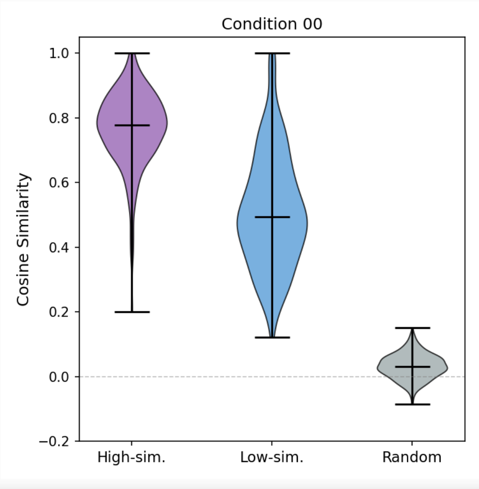

Question: Does sharing facilitate or hinder alignment?
The native overlap O breaks down as follows:
| Category | Count | % of O |
|---|---|---|
| Kanji-related | 4,276 | 17.3% |
| Latin characters | 18,929 | 71.8% |
| Digits | 1,255 | 4.8% |
| Symbols / special tokens | 1,581 | 6.0% |
| Other | 300 | 1.1% |
| Token | Japanese | Chinese |
|---|---|---|
| 学生 | student | student |
| 経済 | economy | economy |
| 手紙 | letter | toilet paper |
| 娘 | daughter | mother |
Does the semantic similarity of shared kanji affect cross-lingual embedding alignment?
If overlap mainly works through semantic transfer, then similarity should determine whether sharing helps.
For each token t in overlap set O (kanji
only, ~4,276 tokens):
e_ja, e_zh
e_ja and e_zh
* Non-kanji overlap (~22,066) always shared.
| ID | Ohi (High-sim) | Olo (Low-sim) | Baseline Analogy |
|---|---|---|---|
| 00 | Separate | Separate | No Overlap |
| 01 | Separate | Shared | Low-sim Overlap |
| 10 | Shared | Separate | High-sim Overlap |
| 11 | Shared | Shared | Full Overlap |
* Background tokens (~25k) shared across all conditions
larryvrh/CCMatrix-v1-Ja_Zh-filtered
| Total steps | 20,000 |
| Warmup steps | 5,000 |
| Learning rate | 2.5e-4 |
| Batch size | 64 |
| Seq length | 512 |
| Optimizer | AdamW |
Goal: test whether kanji token sharing causes the model to learn more or less aligned representations for JA and ZH.
l = 9) of each trained modelOhi_500, Olo_500,
and Random_500, sample up to 100 sentences per
language
e_ja,
e_zh
e_ja and e_zh
Ohi and Olo are
both disjoint.
e_ja and e_zh